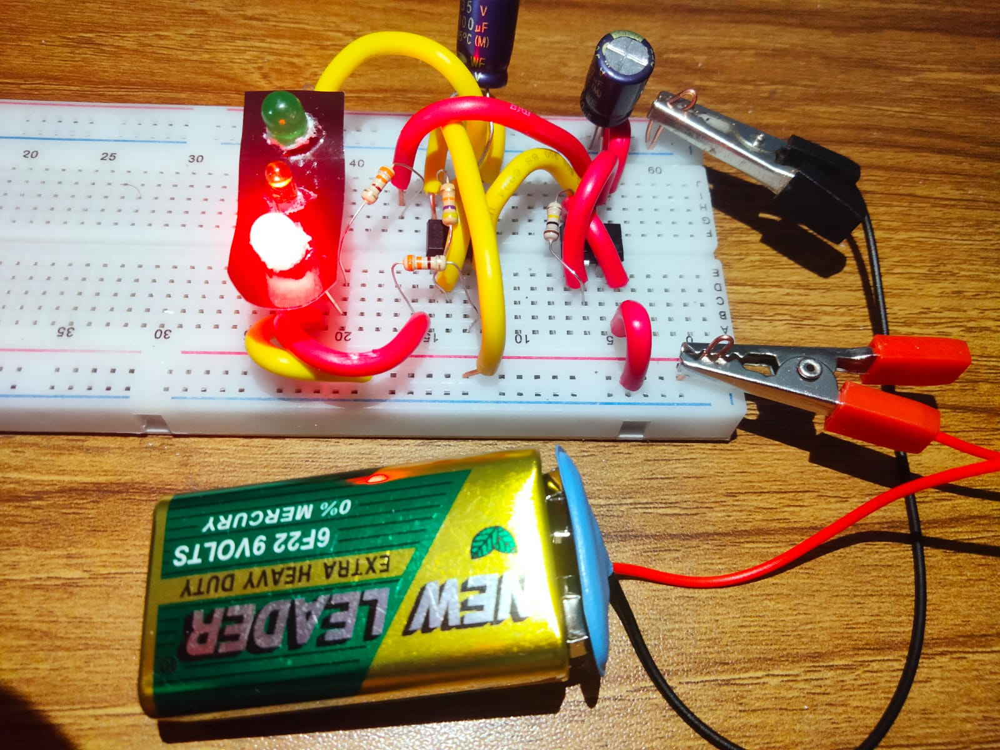

Project Overview
This hardware project demonstrates a real-life Traffic Signal Control System. It uses a 555 Timer IC to manage the red, yellow, and green LEDs sequentially, simulating real traffic lights. The system is designed to enhance traffic management, minimize congestion, and demonstrate practical applications of electronics in everyday life.
Key Components
- 555 Timer IC
- Resistors: 100kΩ, 47kΩ, 390Ω, 330Ω
- Capacitors: 100µF x2
- Red, Yellow, Green LEDs
- 9V Battery
- Breadboard for circuit assembly
This project is ideal for both educational purposes and practical demonstrations of hardware-based traffic signal control systems using timer ICs.